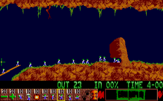
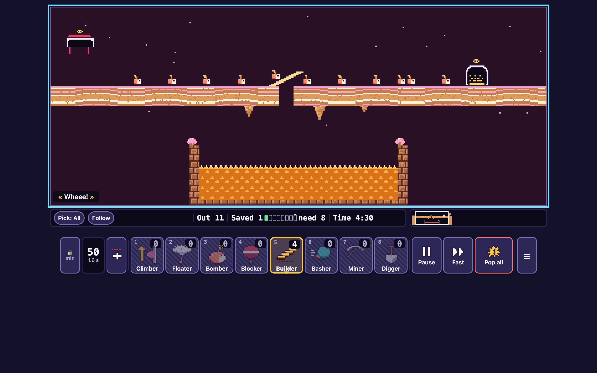
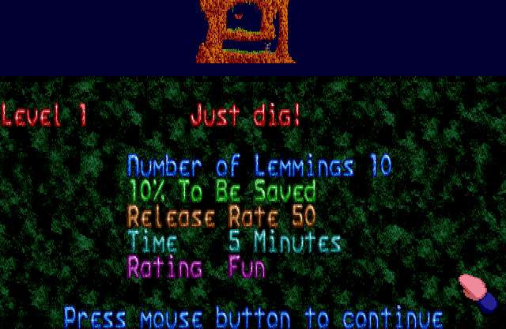
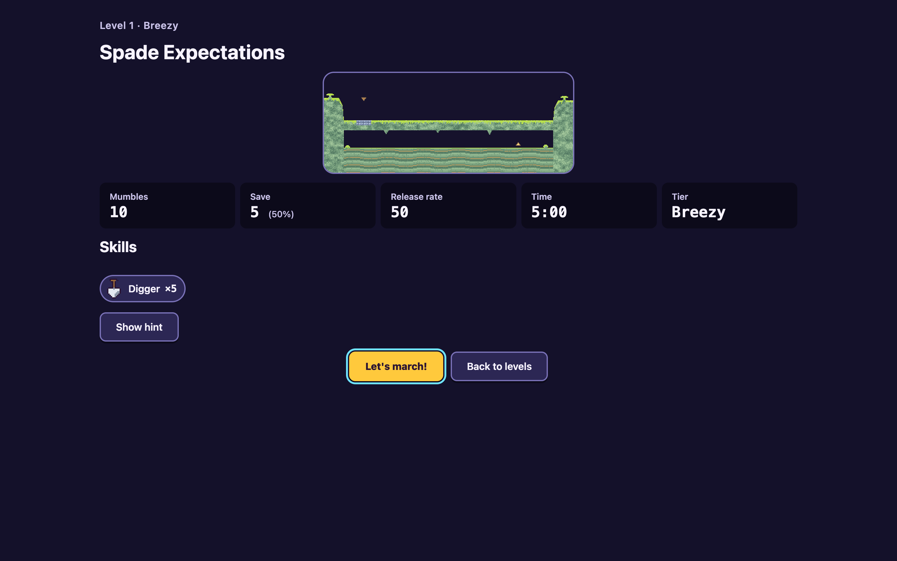
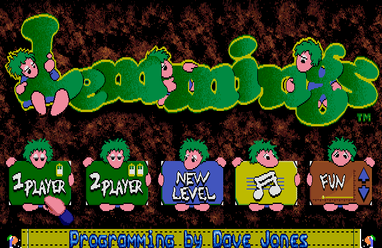
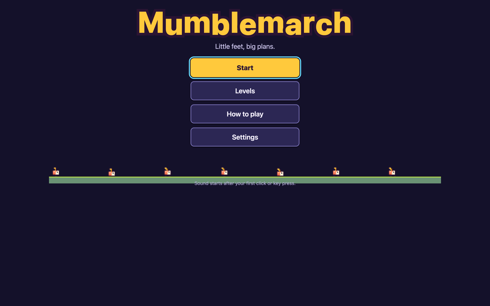
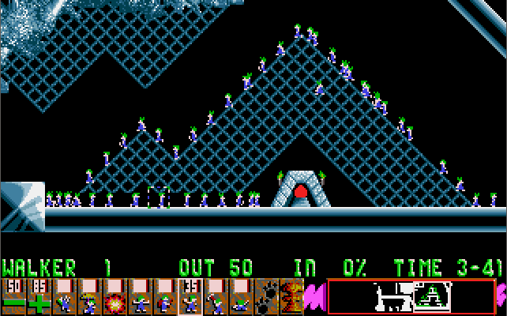
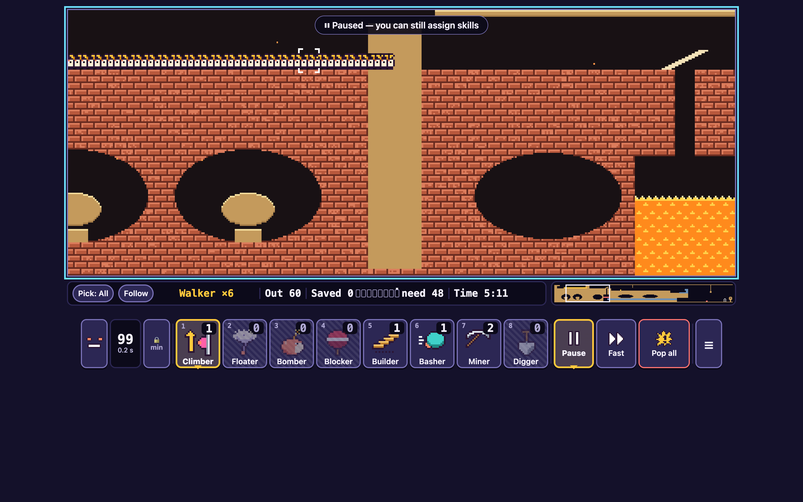

01 · Gameplay: playfield + status line + skill panel + minimap

Reference (Amiga, 320×200)

Mumblemarch — L3 "Bridge Over Troubled Toffee", builder bridge done, 11 out
Matches: same stack (playfield → status line → one-row panel with minimap); RR −/value/+ then 8 skills in the original order, then pause and nuke.
Matches: small critters strung out on a ledge, builder bridge over a hazard gap, dark sky; about 1/16 of the playfield height.
Intentional: labelled, key-numbered 80×88 buttons, "Saved 1 · need 8" with a meter instead of IN %, Fast button, "Pop all", ☰ menu; bark caption "« Wheee! »".
Gap: the HUD is about 25% of the game height rather than 20%, and it reads more like a web toolbar than the chunky pixel panel. The minimap for a 480-wide level is a small strip in a mostly empty well.
02 · A crowd held by a blocker, builder stairs, hover box + status label
Matches: hover bracket framing the critter under the cursor, and the status line names it ("Walker", yellow); hatch top, exit off to the side.
Matches: the crowd presses on the blocker; builder stairs are pale planks; bomber countdown digit above the head.
Intentional: STOP paddle for the blocker, count badges on skills, "0" hatched when a skill is spent; pause pill "Paused — you can still assign skills".
Gap: the crowd is far smaller (12–40 per level vs 78 here), so the "sea of critters" moment is rarer.
03 · Level briefing

Reference (Amiga): level 1 "Just dig!"

Mumblemarch — Level 1 "Spade Expectations"
Matches: same order: level number + pun title that is the hint, a thumbnail of the level, then count / save / release rate / time / rating.
Intentional: save as a count "5 (50%)", tier "Breezy", a skills chip ("Digger ×5"), hint behind "Show hint", a real "Let's march!" button instead of "press mouse button".
Gap: a plain dark page with stat tiles; it has none of the textured backdrop or rainbow lines, so it feels like a settings card rather than a title card. The lower half of the viewport is empty at 1440×900.
04 · Title / main menu

Reference (Amiga): logo + sign-holding critters + credits ticker

Mumblemarch — title
Matches: a big chunky logo (letters bob ±3 px like a marching line) and critters marching along a grassy strip.
Intentional: our own name and logo; Start / Levels / How to play / Settings instead of 1P / 2P / password / music / rating signs; no passwords.
Gap: far less charm: flat buttons, tiny marchers, no characters interacting with the menu. The "Sound starts…" note overlaps the grass strip (CMP-2).
Matches: the same order: headline, then saved vs needed, then a graded one-liner, then what next.
Intentional: our own copy ("Every single mumble made it home. Take a bow!"), a meter with a notch at the requirement, New best / Beat the clock, and explicit Next / Try again / Levels buttons instead of an access code.
Gap: "needed 5" is printed twice (in the big line and under the meter). The saved mumbles hop in a small row, but the page is otherwise empty below.
06 · Dark theme crowd with hover / status label

Reference (DOS VGA): "WALKER 1 OUT 50", only basher left (35)

Mumblemarch — L12 "Last Shift at the Foundry", 60 out, hover on a 6-deep bunch
Matches: near-black background, a long stream of about 60 critters, hover bracket plus "Walker ×6" (the original's "WALKER 6" count semantics).
Matches: empty skills are unmistakable (hatched, dimmed, "0"), like the original's blank counts; RR at 99 with a 0.2 s interval sub-label.
Intentional: brick-red foundry and molten hazard instead of crystal; custom bracket art; Climber selected with a yellow frame and a ▲ notch.
Gap: at RR 99 the crowd is a perfectly even, lock-step row that reads like a fence pattern. The disabled "+" shows "🔒 min" at the maximum (CMP-1).